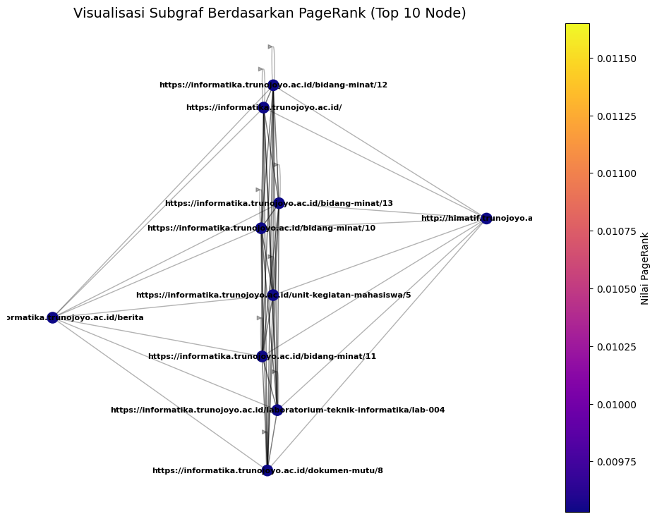

Page Rank#
import numpy as np
import pandas as pd
# === 1. Baca data dan bangun matriks adjacency ===
file_path = "/content/semua_link.csv"
# Lewati baris komentar yang diawali '#'
# Baca CSV dengan separator koma dan lewati header (pertama baris)
edges = pd.read_csv(file_path, sep=',', comment='#', names=['From', 'To'], skiprows=1)
# Tentukan jumlah node
nodes = pd.Index(sorted(set(edges['From']).union(edges['To'])))
n = len(nodes)
print(f"Jumlah node: {n}")
# Buat mapping node → index
node_to_index = {node: i for i, node in enumerate(nodes)}
# Bangun matriks adjacency (sparse)
A = np.zeros((n, n), dtype=float)
for _, row in edges.iterrows():
i = node_to_index[row['From']]
j = node_to_index[row['To']]
A[j, i] = 1 # Kolom j, baris i (arah From → To)
# === 2. Normalisasi kolom (matriks stokastik) ===
col_sums = A.sum(axis=0)
for j in range(n):
if col_sums[j] == 0:
A[:, j] = 1.0 / n # Dangling node → teleportasi penuh
else:
A[:, j] /= col_sums[j]
# === 3. Inisialisasi PageRank ===
r = np.ones(n) / n
# === 4. Iterasi hingga konvergen ===
d = 0.85 # faktor damping
epsilon = 1e-6
converged = False
iteration = 0
while not converged:
r_new = d * A @ r + (1 - d) / n
diff = np.linalg.norm(r_new - r, 1)
iteration += 1
print(f"Iterasi {iteration}: = {diff:.8f}")
if diff < epsilon:
converged = True
r = r_new
# === 5. Tampilkan hasil ===
pagerank_df = pd.DataFrame({
'Node': nodes,
'PageRank': r
}).sort_values(by='PageRank', ascending=False)
print("\nTop 5 node dengan PageRank tertinggi:")
print(pagerank_df.head(5))
Jumlah node: 131
Iterasi 1: = 0.20641431
Iterasi 2: = 0.05763070
Iterasi 3: = 0.01609044
Iterasi 4: = 0.00449244
Iterasi 5: = 0.00125429
Iterasi 6: = 0.00035020
Iterasi 7: = 0.00009777
Iterasi 8: = 0.00002730
Iterasi 9: = 0.00000762
Iterasi 10: = 0.00000213
Iterasi 11: = 0.00000059
Top 5 node dengan PageRank tertinggi:
Node PageRank
0 http://himatif.trunojoyo.ac.id/ 0.01059
5 https://informatika.trunojoyo.ac.id/berita 0.01059
4 https://informatika.trunojoyo.ac.id/ 0.01059
113 https://informatika.trunojoyo.ac.id/unit-kegia... 0.01059
99 https://informatika.trunojoyo.ac.id/laboratori... 0.01059
Visualisasi 10 Node tertinggi#
import networkx as nx
import matplotlib.pyplot as plt
import pandas as pd
import numpy as np # Import numpy for array operations
# === 1. Buat Graph dari data ===
file_path = "/content/semua_link.csv"
edges = pd.read_csv(file_path, sep=',', comment='#', names=['From', 'To'], skiprows=1)
G = nx.DiGraph()
G.add_edges_from(edges.itertuples(index=False, name=None))
# === PageRank Calculation ===
nodes = pd.Index(sorted(set(edges['From']).union(edges['To'])))
n = len(nodes)
node_to_index = {node: i for i, node in enumerate(nodes)}
A = np.zeros((n, n), dtype=float)
for _, row in edges.iterrows():
i = node_to_index[row['From']]
j = node_to_index[row['To']]
A[j, i] = 1
col_sums = A.sum(axis=0)
for j in range(n):
if col_sums[j] == 0:
A[:, j] = 1.0 / n
else:
A[:, j] /= col_sums[j]
r = np.ones(n) / n
d = 0.85
epsilon = 1e-6
converged = False
iteration = 0
while not converged:
r_new = d * A @ r + (1 - d) / n
diff = np.linalg.norm(r_new - r, 1)
iteration += 1
if diff < epsilon:
converged = True
r = r_new
pagerank_df = pd.DataFrame({
'Node': nodes,
'PageRank': r
}).sort_values(by='PageRank', ascending=False)
# === 2. Ambil 10 node dengan PageRank tertinggi ===
top_nodes = pagerank_df.head(10)['Node'].tolist()
H = G.subgraph(top_nodes).copy()
pr_sub = dict(zip(pagerank_df['Node'], pagerank_df['PageRank']))
node_colors = [pr_sub.get(n, 0) for n in H.nodes()]
# === 3. Visualisasi graf dengan label ===
fig, ax = plt.subplots(figsize=(12, 9))
pos = nx.spring_layout(H, k=0.35, seed=42)
# Node dan edge
nx.draw_networkx_nodes(
H, pos,
node_color=node_colors,
cmap=plt.cm.plasma,
node_size=120,
ax=ax
)
nx.draw_networkx_edges(H, pos, alpha=0.3, arrows=False, ax=ax)
# === Tambahkan label node ===
nx.draw_networkx_labels(
H, pos,
font_size=8,
font_color='black',
font_weight='bold',
ax=ax
)
ax.set_title("Visualisasi Subgraf Berdasarkan PageRank (Top 10 Node)", fontsize=14)
ax.axis("off")
sm = plt.cm.ScalarMappable(cmap=plt.cm.plasma)
sm.set_array(node_colors)
plt.colorbar(sm, label="Nilai PageRank", ax=ax)
plt.show()
